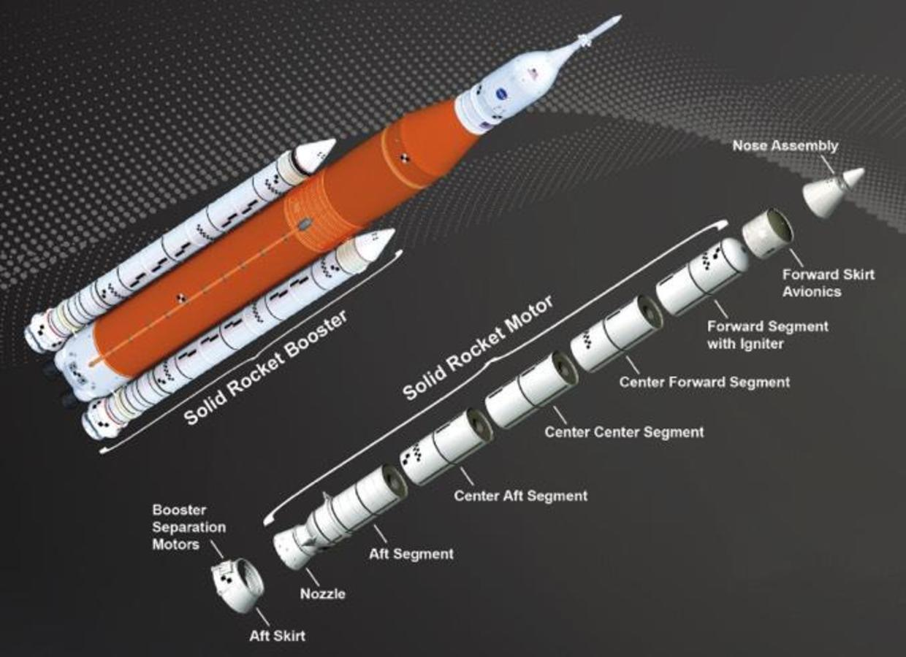
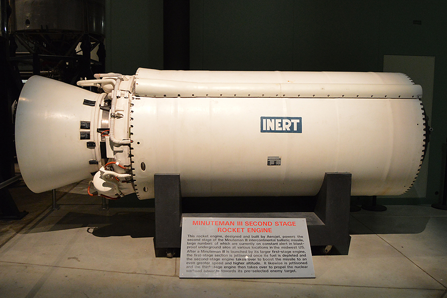
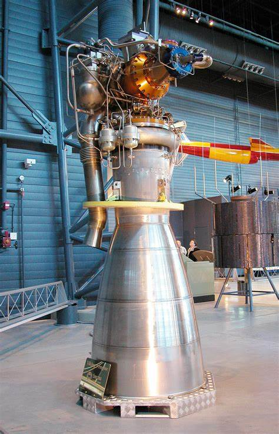
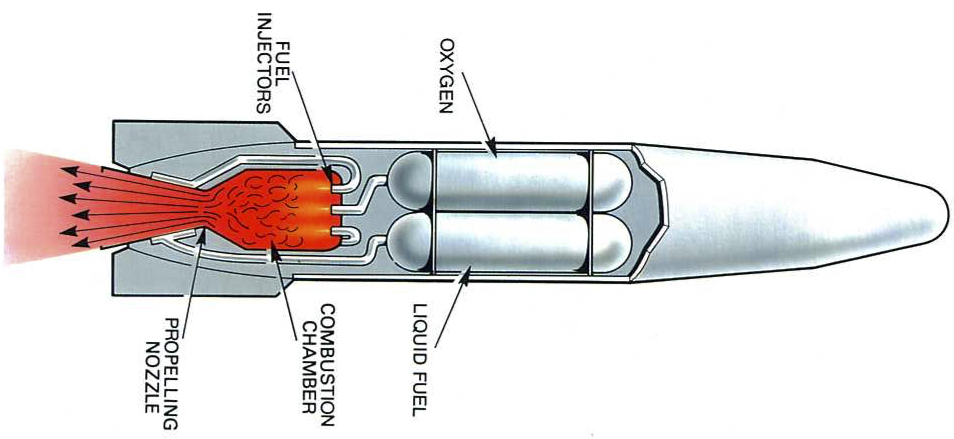
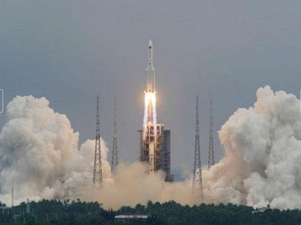
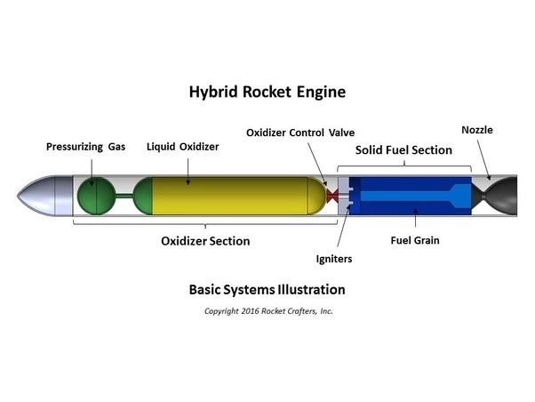
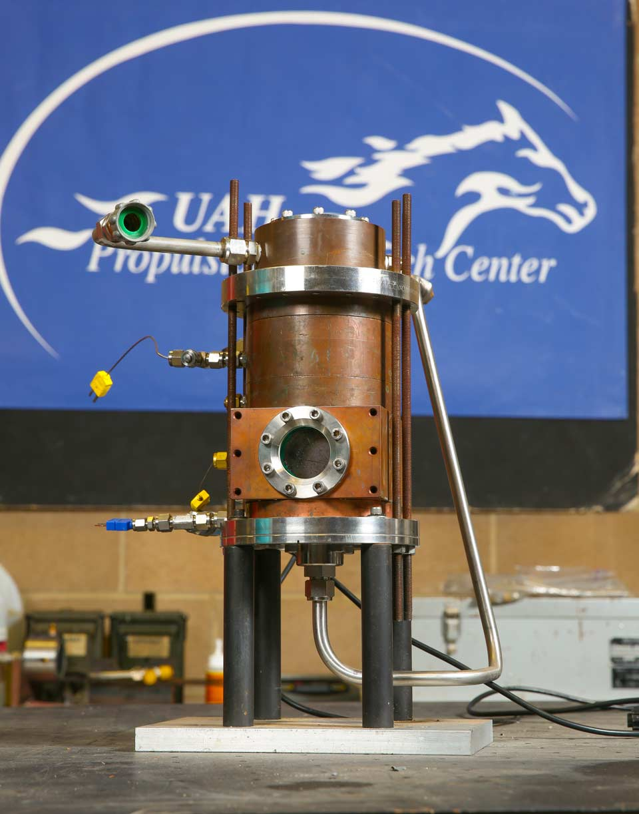

|  |  |
A simple solid rocket motor consists of a casing, nozzle, grain (propellant charge), and igniter.
The solid grain mass burns in a predictable fashion to produce exhaust gases, the flow of which is described by Taylor–Culick flow. The nozzle dimensions are calculated to maintain a design chamber pressure, while producing thrust from the exhaust gases.
Once ignited, a simple solid rocket motor cannot be shut off, because it contains all the ingredients necessary for combustion within the chamber in which they are burned. More advanced solid rocket motors can be throttled, and also be extinguished,[4] and then re-ignited by control of the nozzle geometry, or through the use of vent ports. Further, pulsed rocket motors that burn in segments, and that can be ignited upon command are available.
Modern designs may also include a steerable nozzle for guidance, avionics, recovery hardware (parachutes), self-destruct mechanisms, APUs, controllable tactical motors, controllable divert and attitude control motors, and thermal management materials.
Design begins with the total impulse required, which determines the fuel and oxidizer mass. Grain geometry and chemistry are then chosen to satisfy the required motor characteristics.
The following are chosen or solved simultaneously. The results are exact dimensions for grain, nozzle, and case geometries:
- The grain burns at a predictable rate, given its surface area and chamber pressure.
- The chamber pressure is determined by the nozzle throat diameter and grain burn rate.
- Allowable chamber pressure is a function of casing design.
- The length of burn time is determined by the grain "web thickness".
The grain may or may not be bonded to the casing. Case-bonded motors are more difficult to design, since the deformation of the case and the grain under flight must be compatible.
Common modes of failure in solid rocket motors include fracture of the grain, failure of case bonding, and air pockets in the grain. All of these produce an instantaneous increase in burn surface area and a corresponding increase in exhaust gas production rate and pressure, which may rupture the casing.
Another failure mode is casing seal failure. Seals are required in casings that have to be opened to load the grain. Once a seal fails, hot gas will erode the escape path and result in failure. This was the cause of the Space Shuttle Challenger disaster.
|  |  |
The Delta IV Heavy consists of a central Common Booster Core (CBC), with two additional CBCs as LRBs instead of the GEM-60 solid rocket motors used by the Delta IV Medium+ versions. At lift off, all three cores operate at full thrust, and 44 seconds later the center core throttles down to 55% to conserve fuel until booster separation.[10] The Angara A5V and Falcon Heavy are conceptually similar to Delta IV Heavy.[11]
The Falcon Heavy was originally designed with a unique "propellant crossfeed" capability, whereby the center core engines would be supplied with fuel and oxidizer from the two side cores until their separation.[12] Operating all engines at full thrust from launch, with fuel supplied mainly from the side boosters, would deplete the side boosters sooner, allowing their earlier separation to reduce the mass being accelerated.
This would leave most of the center core propellant available after booster separation.[13] Musk stated in 2016 that crossfeed would not be implemented.[14] Instead, the center booster throttles down shortly after liftoff to conserve fuel, and resumes full thrust after the side boosters have separated.[15]
By 1926, US scientist Robert Goddard had constructed and successfully tested the first rocket using liquid fuel at Auburn, Massachusetts.[citation needed]
Launch of Ariane 44LP two solid rocket booster (smaller) and two liquid rocket boosters (larger, with no visible plumes)
For the Cold War era R-7 Semyorka missile, which later evolved into the Soyuz rocket, this concept was chosen because it allowed all of its many rocket engines to be ignited and checked for function while on the launch pad.[citation needed]
The Soviet Energia rocket of the 1980s used four Zenit liquid fueled boosters to loft both the Buran and the experimental Polyus space battlestation in two separate launches.[citation needed]
Two versions of the Japanese H-IIA space rocket would have used one or two LRBs to be able to carry extra cargo to higher geostationary orbits, but it was replaced by the H-IIB.[citation needed]
The Ariane 4 space launch vehicle could use two or four LRBs, the 42L, 44L, and 44LP configurations. As an example of the payload increase that boosters provide, the basic Ariane 40 model without boosters could launch around 2,175 kilograms into Geostationary transfer orbit,[1] while the 44L configuration could launch 4,790 kg to the same orbit with four liquid boosters added.[2]
Various LRBs were considered early in the Space Shuttle development program and after the Challenger accident, but the Shuttle continued flying its Space Shuttle Solid Rocket Booster until retirement.[citation needed]
After the Space Shuttle retired, Pratt & Whitney Rocketdyne and Dynetics entered the "advanced booster competition" for NASA's next human rated vehicle, the Space Launch System (SLS), with a booster design known as "Pyrios", which would use two more advanced F-1B booster engines derived from the Rocketdyne F-1 LOX/RP-1 engine that powered the first stage of the Saturn V vehicle in the Apollo program. In 2012, it was determined that if the dual-engined Pyrios booster was selected for the SLS Block 2, the payload could be 150 metric tons (t) to Low Earth Orbit, 20 t more than the congressional minimum requirement of 130 t to LEO for SLS Block 2.[3] In 2013, it was reported that in comparison to the F-1 engine, the F-1B engine was to have improved efficiency, be more cost effective and have fewer engine parts.[4] Each F-1B was to produce 1,800,000 lbf (8.0 MN) of thrust at sea level, an increase over the 1,550,000 lbf (6.9 MN) of thrust of the initial F-1 engine.[5]
Many Chinese launch vehicles have been using liquid boosters. These include China's man-rated Long March 2F which uses four liquid rocket boosters each powered by a single YF-20B hypergolic rocket engine.[6] The retired Long March 2E variant also used similar four liquid boosters.[7] as did Long March 3B[8] and Long March 3C variants. China developed semi-cryogenic boosters for the Long March 7 and Long March 5, its newest series of launch vehicles as of 2017 .[9]
|  |  |  |
In its simplest form, a hybrid rocket consists of a pressure vessel (tank) containing the liquid oxidiser, the combustion chamber containing the solid propellant, and a mechanical device separating the two. When thrust is desired, a suitable ignition source is introduced in the combustion chamber and the valve is opened. The liquid oxidiser (or gas) flows into the combustion chamber where it is vaporized and then reacted with the solid propellant. Combustion occurs in a boundary layer diffusion flame adjacent to the surface of the solid propellant.
Generally, the liquid propellant is the oxidizer and the solid propellant is the fuel because solid oxidizers are extremely dangerous and lower performing than liquid oxidizers. Furthermore, using a solid fuel such as Hydroxyl-terminated polybutadiene (HTPB) or paraffin wax allows for the incorporation of high-energy fuel additives such as aluminium, lithium, or metal hydrides.
A reverse-hybrid rocket, which is not very common, is one where the engine uses a solid oxidizer and a liquid fuel. Some liquid fuel options are kerosene, hydrazine, and LH2. Common fuels for a typical hybrid rocket engine include polymers such as acrylics, polyethylene (PE), cross-linked rubber, such as HTPB, or liquefying fuels such as paraffin wax. Plexiglass was a common fuel, since the combustion could be visible through the transparent combustion chamber.
Hydroxyl-terminated polybutadiene (HTPB) synthetic rubber is currently the most popular fuel for hybrid rocket engines, due to its energy, and due to how safe it is to handle. Tests have been performed in which HTPB was soaked in liquid oxygen, and it still did not become explosive. These fuels are generally not as dense as solid rocket motors, so they are often doped with aluminum to increase the density and therefore the rocket performance.
Hybrid rocket fuel grains can be manufactured via casting techniques, since they are typically a plastic or a rubber. Complex geometries, which are driven by the need for higher fuel mass flow rates, makes casting fuel grains for hybrid rockets expensive and time-consuming due in part to equipment costs. On a larger scale, cast grains must be supported by internal webbing, so that large chunks of fuel do not impact or even potentially block the nozzle. Grain defects are also an issue in larger grains. Traditional fuels that are cast are hydroxyl-terminated polybutadiene (HTPB) and paraffin waxes.
Generally, well designed and carefully constructed hybrids are very safe. The primary hazards associated with hybrids are:
Pressure vessel failures – Chamber insulation failure may allow hot combustion gases near the chamber walls leading to a "burn-through" in which the vessel ruptures.
Blow back – For oxidizers that decompose exothermically such as nitrous oxide or hydrogen peroxide, flame or hot gasses from the combustion chamber can propagate back through the injector, vaporising the oxidizer and mixing it with hot fuel rich gasses leading to a tank explosion. Blow-back requires gases to flow back through the injector due to insufficient pressure drop which can occur during periods of unstable combustion. Blow back is inherent to specific oxidizers and is not possible with oxidizers such as oxygen, or nitrogen tetroxide, unless fuel is present in the oxidizer tank.
Hard starts – An excess of oxidizer in the combustion chamber prior to ignition, particularly for monopropellants such as nitrous oxide, can result in a temporary over-pressure or "spike" at ignition.
Because the fuel in a hybrid does not contain an oxidizer, it will not combust explosively on its own. For this reason, hybrids are classified as having no TNT equivalent explosive power. In contrast, solid rockets often have TNT equivalencies similar in magnitude to the mass of the propellant grain. Liquid-fuel rockets typically have a TNT equivalence calculated based on the amount of fuel and oxidizer which could realistically intimately combine before igniting explosively; this is often taken to be 10–20% of the total propellant mass. For hybrids, even filling the combustion chamber with oxidizer prior to ignition will not generally create an explosion with the solid fuel, the explosive equivalence is often quoted as 0%.